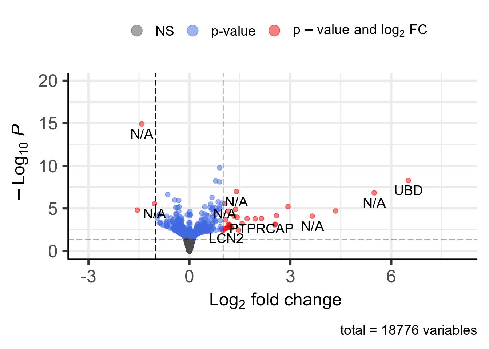

1.2.3.2 DEA
1.2.3.2.1 Fluoxetine VS Control with Tissue as covariate
## Warning in DESeqDataSet(se, design = design, ignoreRank): some variables in
## design formula are characters, converting to factors## [1] "Intercept"
## [2] "tissue_region_Hippocampus_vs_Frontal.cortex"
## [3] "tissue_region_Pituitary.gland_vs_Frontal.cortex"
## [4] "group_Fluoxetine_vs_Control"
## [5] "group_Acupuncture_vs_Control"
## [6] "group_model.of.depression_vs_Control"

Figure 1.5: Volcano plot. 33 significant genes according to Pvalue < 0.05 and |log2FoldChange| > 1 are highlighted in red and available in this table.
- Enrichr results for all deregulated genes are available here
- Enrichr results for upregulated genes are available here
- Enrichr results for downregulated genes are available here
- g:Profiler results for all deregulated genes are available here
- g:Profiler results for all upregulated genes are available here
- g:Profiler results for all downregulated genes are available here
- g:Profiler results for comparison of the three queries above are available here